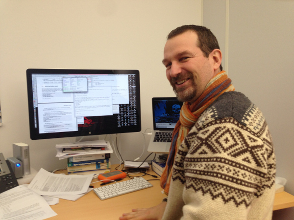
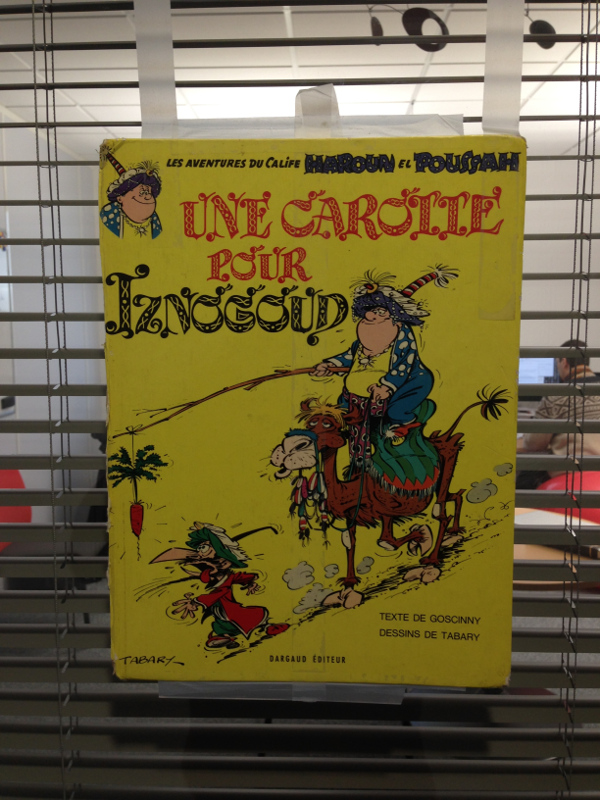
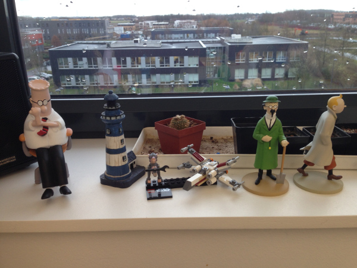

Interview RMoD #3: Stéphane Ducasse
Interview with Stéphane Ducasse RMoD interview
This is the third post of a series, in which I interview my colleagues of the RMoD team (in Lille, France), with the hope that I can share part of what it really means to work here.
Here's the interview of Stéphane Ducasse. It would not be possible to do an interview of the RMoD team without interviewing Stef: he's not only our leader, he's the backbone of RMoD. Since I joined the team, he managed to hire great people and build an awesome team around research and Pharo.
Stef shows so much enthousiasm and energy, he's always passionate about work, and care deeply about his team and what we accomplish.

Figure 1: Stef in his office, always smiling
Hi Stef, thanks for taking this interview. Could you tell us a bit about yourself?
Let us what a biased introduction could interest people! Here is my try: I hope you will find something interesting.
I'm a researcher. I did my PhD at Nice on language design. I lived there for 30 years. I started programming in Lisp and I like objects so I worked in CLOS and I was a CLOS expert MOPer. I declined a job for the company building tools to develop 3d Objects (they did for example the ones of The Lord of The Ring with the software), because it was not research, in California and without green card. So in 1996 I started to work on reengineeting after my PhD as a postdoc at Bern (where I stayed there during 10 years) - I knew nothing on it.
At Bern, in my office there was a big sun station (and I was living in my office because my wife was working 900 km during 9 months) so I stole the Smalltalk implementation of the University of Nice and started to learn Smalltalk for real. Before I could not run a smalltalk on my machine. I was shocked. The language was made for me: dynamic + objects. So I decided to give a lecture and I read everything I could learn. Then we bought a license for Smalltalk and I started to build Moose. Then my wife arrived in Switzerland and she had to teach math, physic and computer science. So in parallel to my day job I started to look at what I could do to help her and I designed BotsInc.
I looked at Squeak at that time and I started to program with it the night and the day I was working in VisualWorks.
Around 2000 (I do not remember) I restarted to work on language design and got a lot of fun around traits, classboxes and others. I had a dream: a great open-source wonderful Smalltalk. Slowly I got more and more involved into Squeak and I finished to be the release master of Squeak 3.9. In 2008 I quitted the Squeak community because I really wanted to get a real clean and lean Smalltalk of 2000 and not something of the past. So I had a difficult decision: either I quit Smalltalk and do something else, or I build a new one from scratch or I fork. And I forked Squeak. I was not easy because I wrote several (3 books on Squeak), videos, lectures… but I decided to build Pharo.
Now Pharo is not my dream it is what I have now and daily I improve it and my dream is getting more and more a reality. To me Pharo is like an autobus full of people and I want that it transforms itself into a jet during our journey. I want to reinvent Smalltalk: I want a minimal core, isolation, scripting syntax, full C integration, bootstrap, vector graphics, new meta object protocol and much more. We are getting there.
Now I created a company Synectique based on my research and I want it to succeed. We are building specific analysis tools to help managing large applications. I’m helping other guys to create another company on web applications and I also want to push so that it succeeds. I like the idea that people can feed their kids using our system and their intelligence.
Finally I'm french, kind of important for me in this global world where everybody is expected to speak perfect english but where people judging others barely speak one language: their own. From my naive perspective, I would like to build a better world. I’m a bit sick of hyper consumerism, pollution, people making too much money, exploitation of other people (and many other things that if you really think about them you feel sick inside). May be one day I will do politics to try to change our world because we only have one.

Figure 2: In front of Stef's office
You are leading the RMoD team in Inria. What kind of leader are you?
I do not know. My door is open all the time and people can come to talk to me.
Now I hope that I help them to give the best of themselves and make their dreams come true. I think that one part of my duties is to be an enabler: make sure smart guys come in the team, expand and have fun, building their life. May be I'm an umbrella or oak that protects little plants to grow nicely around me.
I have a vision and usually I feel the direction where we should go. Fuel is a nice example of a really successful idea that we built step by step with Tristan, Martin, Mariano and now Max.
Now I can be a pain because I'm stubborn and I often thought a lot about something and I'm often right. Now since I spent my time flattening the road so that others can drive I frustrate that I cannot drive a F1 on the same road (but to be a good driver people need to practice and my practice time is too short). But this is life.

Figure 3: Stef has the playful mind of a kid :)
What kind of relationship do you have with members of the team?
My family?
Some people think that I’m too close. After some other people do not understand that not all the bosses are that close. And they may make mistake or be something crossing the borders but this is part of the game.
I do not like to show my muscles to be respected. I do not need that (even if I can show my muscles and teeth and bit hard).
How does a typical day at RMoD look like for Stéphane Ducasse?
I arrive and usually forget that I have a meeting somewhere with Inria lab board (as part of the lab bosses). Then I run there.
Or I forgot and it this is too late. Depending on the year period I plan budget, hiring, hardware, interns… I love Excel, like Word (should be called Characters because in 2014 crashing on copy and paste and being so bad is an insult to our field).
Then I read, review articles, write articles - usually when I put my name on a paper I worked a lot on it. Now lately with the community, Synectique and other tasks, it happens that I just read the paper (and this is a bit frustrating but this is the priviledge of the age). I work on project proposals. And I talk talk talk with people, listen listen listen to people, make sure information flow from x to z, that k and t talk together. Then when nobody is around or when people are on vacation I like to pair program on cleaning Pharo. I got great coding sessions with Igor or Esteban cleaning boring code.
I write books the evenings. Or program my little stuff. I’m trying to avoid to do boring administration at home but so far I failed because else I would not interact with people.
What question would you ask another member of the team?
What do you want to invent?
Thank you again Stef, it was really nice!
Other RMoD members interviews:
comments powered by Disqus